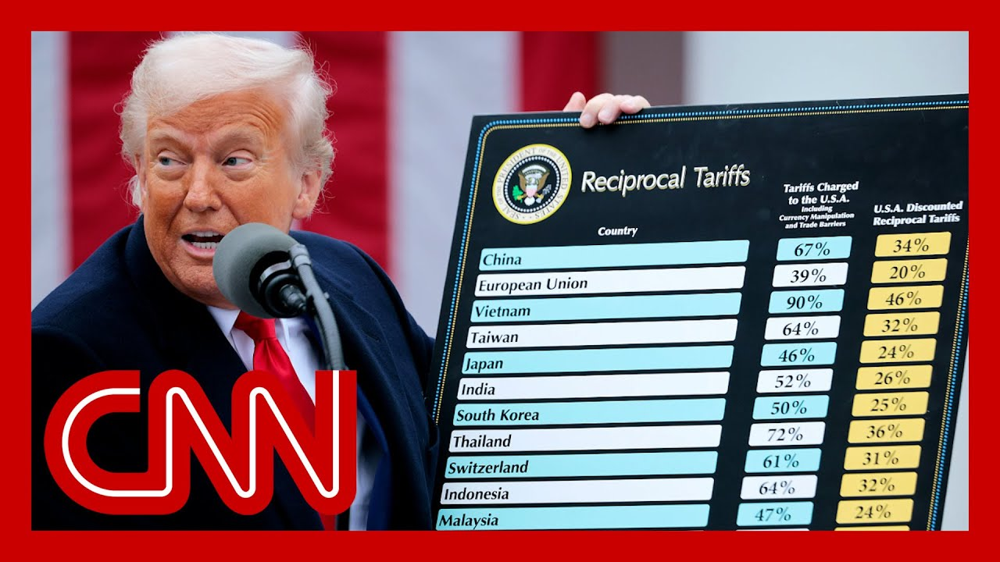

【美国法院阻止特朗普的“解放日”关税】
Summary: A federal court has halted most of Trump's global tariffs, citing overreach of presidential authority, with significant political and economic implications.
摘要： 联邦法院叫停了特朗普大部分全球关税，认为总统权力越界，具有重大政治和经济影响。

⏱️ Estimated Reading Time: 14 min
A federal court has just blocked the bulk of President Trump's sweeping global tariffs from going to effect.
联邦法院刚刚阻止了特朗普总统大部分全面全球关税的实施。
The ruling comes from the U.S. Court of International Trade in Manhattan.
裁决来自曼哈顿的美国国际贸易法院。
It's a unique and relatively low key division of the federal judi But tonight, it is flexing its authority in a big way.
这是一个独特且相对低调的联邦司法部门，但今晚它正大幅行使权力。
The three judge panel ruled in favor of an injunction against the tariffs, which have roiled worldwide financial markets in recent mont Unclear right now whether the injunction is temporary or permanent, but the decision is potentially Political, economic and legal repercussions.
由三名法官组成的小组裁定支持对关税的禁令，这些关税最近几个月扰乱了全球金融市场。目前尚不清楚禁令是临时还是永久性的，但这一决定可能带来政治、经济和法律影响。
Just moments ago, white House Deputy Chief of Staff Stephen Miller wrote on line the judicial coup is out of cont I'm joined now by former federal prosecutor Ali Hoenig and former senior adviser to President Obama, David Axelrod.
就在刚才，白宫副幕僚长斯蒂芬·米勒在网上写道，这是“司法政变”。现在与我连线的是前联邦检察官阿里·霍尼格和前奥巴马总统高级顾问戴维·阿克塞尔罗德。
Elie, is this a judicial coup? What is this court? No, this is a fully legitimate federal court.
埃利，这是司法政变吗？这是什么法院？不，这是一个完全合法的联邦法院。
I should note this is a 3 to 0 o The three judges on this court were appointed by President Reag President Obama and President Tr So I don't know where they're getting this coup language from.
值得注意的是，这是一项3比0的裁决。该法院的三名法官分别由里根总统、奥巴马总统和特朗普总统任命。所以我不明白他们为何用“政变”这种说法。
This is a huge setback for Trump and his administration. As big a deal as the tariffs wer This is as big a deal in the opposite direction.
这对特朗普及其政府是重大挫折。关税政策影响有多大，这一裁决的反向影响就有多大。
It essentially pauses for now. Rules illegal and unconstitution Almost all of the tariffs that have put in place and the core of the ruling is th Typically it is Congress that controls the tariff power.
裁决实质上暂缓了几乎所有已实施的关税，并认定其非法且违宪。核心在于，关税权通常由国会掌控。
However, Congress can pass laws giving that power to the preside in certain instances. They did that years ago in a statute called the IEA the International Emergency Economic Powers Act.
但国会可通过法律在特定情况下将权力授予总统。多年前通过的《国际紧急经济权力法》就是如此。
Trump then declared, okay, we are in an international economic emergency because of our trade deficits, because of other economic worldwide factors. And this court unanimously 3 to 0 said that is not an economic emergenc That is not what the law means.
特朗普随后宣布，由于贸易逆差和其他全球经济因素，美国处于国际经济紧急状态。但法院一致以3比0裁定这不构成经济紧急状态，不符合法律本意。
Having trade deficits, which we've had for 49 years continuously, and has now struck down for the time being. All of those tariffs that were put in place on Trump's first day and then on quote unquote, liberation Day, April 2nd.
美国已连续49年存在贸易逆差，法院现暂废除了这些关税，包括特朗普上任首日和4月2日所谓“解放日”实施的关税。
David, I mean, how much of a black eye is this for the administration? Well, yeah. You know, Trump loves tariffs.
戴维，这对政府是多大的打击？是的，众所周知特朗普热衷关税。
We know that he thinks it's a cu all for all of Americans. Problems. America's problems. It will, you know, raise revenue It will bring jobs flowing back Manufacturing jobs.
他认为关税能解决美国所有问题——增加收入、让制造业岗位回流。
You know, it will restore American respect and balance in all of th so, but, you know, in a weird way, I mean, in the short run, I think it creates a lot of havo because everyone's trying to figure out when this in the long run, it could save him from himself because these tariffs are bad economic policy, and these tariffs could raise costs on Americans.
短期内会造成混乱，但长期可能阻止他实施损害美国经济的政策，避免抬高民众生活成本。
They're already starting to and so if if the result of it is he's stymied in doing something that's going to raise costs for It may be a black guy, but it may also be, a break for at least legally.
如果这阻止了他推行增加成本的政策，虽看似挫败，但从法律角度看或许是转机。
What's the recourse for the whit So, like any other federal case, this will be appealed.
白宫有何对策？与其他联邦案件一样，这将上诉。
I think the first thing the white House is going to do is ask the Court of Appeals, which in this case is called the Federal Circuit. Usually the circuits are first through 11th. It's a separate they're going to ask the Federal first of all, to block this ruling essentially to unblock the tariffs.
白宫可能首先要求联邦巡回上诉法院暂缓裁决，恢复关税。
Then the white House is going to to the Federal Circuit, which again functions as that mid-level court of appea And then whoever loses there, I think is very likely to appeal up to the U.S. Supreme This could wind up in front of t Supreme Court.
随后案件可能上诉至最高法院。
look, I think if we look at the recent Supreme Court opinions, they've been skeptical of these of dramatic invocations by the administration.
近期最高法院对政府过度援引紧急权力的倾向持怀疑态度。
As one example, the Supreme Court has found that the Alien Enemies act this does not involve an invasio or an incursion. So I think there's some skeptici towards this sort of tendency the administration has of calling everything an emergency, everything an attack, everything an incursion, rebellion, etc..
例如，最高法院曾裁定《敌对外国人法》不适用于入侵事件，表明其对政府滥用“紧急状态”标签的质疑。
Y I mean, I think that, what we know is that Trump is not a great respecter of rules and laws and norms and institutions, doesn't want to be constrained. He wants to expand the power of the executive, and declaring these emergencies has given him the legal, legal pretext, to do And now this is being challenged on a lot of different fronts.
特朗普倾向于扩大行政权，而宣布紧急状态为其提供了法律借口，如今这种做法正受到多方挑战。
So there are long term implications for it. It also, I mean, it's certainly throws a monkey wrench into any negotiations that are going on between the US and other countri I mean, do those continue during a period like this?
这不仅有长期影响，还会干扰美国与他国的贸易谈判。
Yeah. I mean, I think that's a very big questi I mean, I don't know how you neg if you don't know, maybe I just don't know. And I think that's one of the re why this is going to throw the whole trade picture into, kind of havoc.
这确实是个大问题，可能引发贸易领域的混乱。
So do tariffs remain in place ri Most of them know. Most of them are now suspended.
目前大部分关税已暂停。
So their opinion specifies three categories of tariffs that are now declared illegal. The trafficking tariffs, which were declared on the first January 20th, directed primarily at Canada and Mexico and at China.
裁决明确三类关税非法：1月20日针对加拿大、墨西哥和中国的“贩运关税”。
Those numbers have shifted. But Canada, Mexico, China, those are now on hold. Those are now struck down also the so-called worldwide and retaliatory tariffs.
这些关税现被叫停，包括所谓“全球报复性关税”。
Those were the ones announced on 2nd on so-called Liberation Day, the 10% on everyone that Trump announced that day, the 11 to 50% that was imposed o other countries and the retaliatory tariffs on C So all of those categories, they're all on whole tariffs that have already been collected Oh, that's a great question.
即4月2日“解放日”宣布的10%全球关税、对他国11%-50%关税及对中国的报复性关税。
Do they go back? I don't know the answer to that. I think if this ultimately gets know, it's it's good. I would imagine that if this ultimately gets struck d if it goes all the way up to the Supreme Court, then there could be an action brought by those other countries to recover.
是否退还已征关税尚不明确，若最高法院维持裁决，他国可能提起诉讼追回款项。
I mean, it would be money wrongl according to this ruling that just came down. David Axelrod, thanks very much.
根据当前裁决，这些属于不当征收。
Markets are jumping in after hou trading on that news that a court has halted Trump's, quote, Liberation Day tariffs temporarily.
市场对此反应积极，盘后交易中股指上涨。
Dow futures rising immediately on the news by more than a percent 1.1%, 500 About 1.5% for the S&P 500. Even more than that for the Nasd The bulk of Trump's tariffs now paused by a court.
道指期货涨1.1%，标普500涨1.5%，纳斯达克涨幅更大。
Now, this is a three judge panel as I said, a temporary pause rul Trump does not have the authorit to impose the tariffs.
这是三名法官作出的临时暂停令，认定特朗普无权实施这些关税。
Paula read his OutFront now. Now Paula, when we look at all o what's been going on with these this is an outcome that many had not anticipated a court getting in and said Trum saying Trump can't even do this to begin with.
保拉，这一裁决出乎意料，法院直接否定特朗普的关税权。
So what can you tell us about this ruling? Well, we've seen across the country are in various court blocking Trump's policies, but this is one of the first tim we have seen a court blocking his ability to impose these global tariffs.
这是法院首次阻止其全球关税实施能力。
Now, this particular lawsuit, this was brought by a legal advocacy group that r small businesses and claimed that they had been s harmed by these tariffs.
本案由代表中小企业的法律倡导组织提起，指控其受关税损害。
And here this is a very low profile court. As you noted at the U.S. Court of International Trade, they ruled in favor of a permanent injunction.
这个低调的国际贸易法院作出了永久禁令裁决。
So this is a permit. It's temporary, but it lasts until this case moves on injunct So this is effectively grounds Trump's tariffs to a halt.
虽名义临时，但实际叫停了所有相关关税。
So this is incredibly significan because we know that he uses these tariffs as a key part of his international trade so-called deals and policy.
这极其重要，因关税是其贸易政策核心工具。
So to have this court blocked this with a preliminary injunction, this is surprising. And as you noted, this is going to have an impact not only on his policies but on global markets.
初步禁令出人意料，将影响其政策及全球市场。
Now, we have also seen the administration rail against the fact that any courts can block policies put forth by the administration. So we are waiting for comment from the Justice Department, from the white House in response to this enormous dec
政府曾反对司法干预行政政策，现等待其回应。
All right, Paula, thank you very Let's go straight to Ryan Goodma Just joining us on the phone as this news broke.
现在连线刚获知消息的瑞安·古德曼。
So, Ryan, you heard Paula say like it's a court, the court of International Trade that many were not would not have heard of prior to tonight a coming out and in unexpected f and and ending the tariffs for n How significant is this ruling.
这个鲜为人知的法院作出重大裁决。
It's very significant. the court at the end of the ruli says we're not just ruling for this plaintiff, but we're basically ruling for e that would be covered by the tar there are other cases that have been brought to the sa judge and since, ruling for all of those cases as by saying that the tariffs are n and in some ways, the court's ar basically says this goes back to Congress.
裁决具有广泛效力，认定关税非法，强调关税权归属国会。
It boils down to the idea that there was always a poor fit for the tariffs being invoked by the administration, because the administration says they were operating under this Emergency National Security And the court says, no, you aren that the National Security Act was not built for something like this.
法院否定政府援引《国家安全法》的合理性。
It's really Congress's authority to give it to you and you don't have it yet. So it really means that the whit has to go to Congress. Unless, of course, they can get ruling overturned.
白宫必须寻求国会授权，除非裁决被推翻。
Okay. So can you walk through, though, that the timing of all of this and we're in a situation where, I mean, this is a seismic shift. So what happens now?
请说明后续时间线和可能进程。
I guess, in terms of how long it would take to have this actually work its way through th or where do things go from the court of international trade what's the timeline and process Given the dramatic global implic
考虑到全球影响，案件可能快速上诉。
The administration, in all likelihood will first ask the court itself just to put a pause on its own r Yes, the ruling is one that is a permanent ruling. It's it's like it's final decisi But they can ask the court, can you just pause it while we a
政府可能请求法院暂缓执行裁决以便上诉。
This is one of these rare situat in which the court itself, even though it ruled in, against the administration, might say, okay, we'll pause our ruling so you can appeal it. If they don't do that, then the administration will app one step up to the First Circuit, and then the, question becomes whether or not that Court of Appeals will stop this ruling from going into effect while the whether or not they want to over
若法院拒绝，将上诉至第一巡回法院。
So we might get a pause, quite quickly, which will obviously jolt everything back into place as it was before this ruling, but it's anybody's guess as to how that's going to All right. Well, a very, very significant m Thank you so much, Ryan Goodman, as we see it, trying to digest the importance in this moment as stocks are jumping right now.
市场正消化这一重大消息，股指应声上涨。